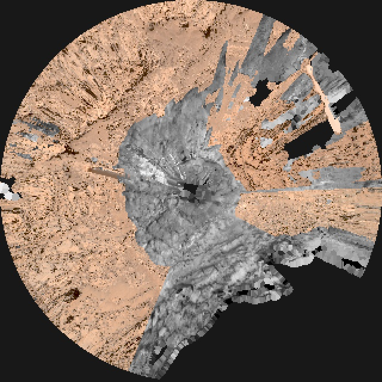

Original Navcam geometry with real Mastcam RGB. 62.3% of vertices receive color from 20 images; the rest remain grayscale.
Preview registration from telemetry, not hand-refined. Uncovered vertices keep original grayscale. Geometry and depth-source labels unchanged.
Open color reconstruction · Original scientific report